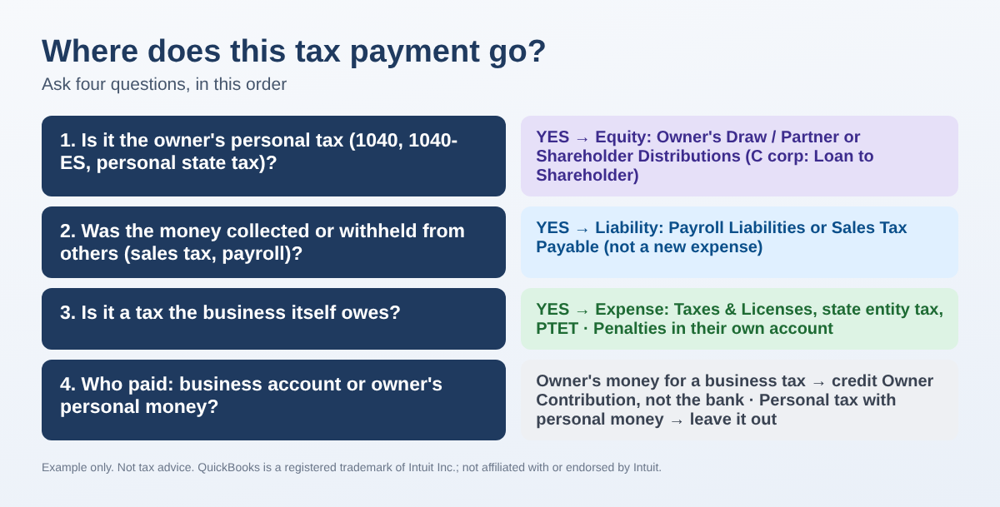
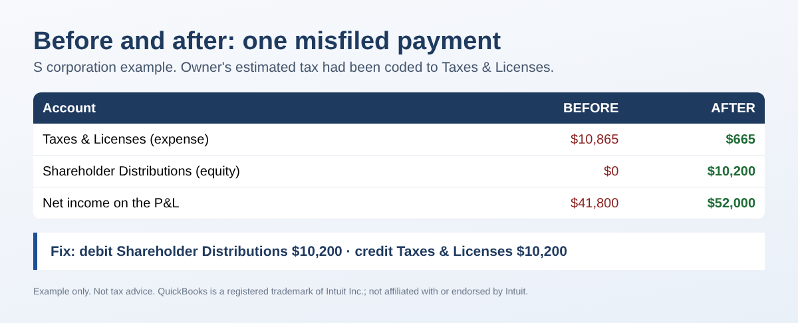
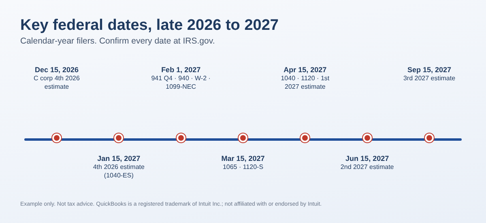

Where to Record Tax Payments in QuickBooks: Owner Draw, Liability or Expense?
↓ Get the free Excel + PDF kit for this article
Open almost any small business's books at year-end and look at the account called "Taxes" or "Taxes & Licenses." You will often find a mix of very different payments: the owner's quarterly 1040-ES, payroll tax deposits, sales tax, a property tax bill and an IRS penalty, all in one expense account. The Profit & Loss then looks worse than it is, payroll and sales tax liabilities never come down to zero, and the year-end cleanup takes days.
This post shows a simple method you can use yourself, in QuickBooks Desktop, QuickBooks Online or a spreadsheet, to decide where every tax payment belongs and how to enter it. It matters most right now: the last 2026 estimated tax payment for individuals is due in January 2027, payroll year-end forms follow right after, and every misfiled payment has to be found before the books go to your tax preparer.
The short answer: three destinations
Every tax payment goes to one of three places in your books:
- Equity (owner's draw or distribution): the owner's own income taxes paid with business money.
- A liability that the payment clears: payroll taxes and sales tax, because the expense (or the customer's money) was already recorded.
- An expense: taxes the business itself owes, such as property tax, licenses, state entity taxes, and penalties (kept in their own account).

Step 1: Ask the four questions for each payment
- Whose tax is it? The owner's 1040, 1040-ES and personal state income tax are personal, even when paid from the business account. They are not business expenses.
- Was the money already collected or withheld? Sales tax was collected from customers and payroll withholding was taken from employees. Paying them clears a liability. The employer share of payroll tax was booked as an expense when payroll was recorded, so the deposit is not a second expense.
- What type of business is it? A sole proprietor records the owner's tax as Owner's Draw. A partnership charges it to that partner's distributions. An S corporation records a shareholder distribution (and should keep distributions in proportion to ownership). A C corporation generally should not pay an owner's personal tax at all: record it as a loan to the shareholder and talk to your tax preparer about repayment or wage treatment.
- Whose money paid it? If the owner paid a business tax with personal money, record the business expense and credit an owner contribution (or a loan from the owner) instead of the bank. If the owner paid a personal tax with personal money, leave it out of the books.
Step 2: Build a one-page map (example)
Here is the map for an S corporation. The amounts are examples only.
| Payment (EXAMPLE) | Amount | Record to | On the P&L? |
|---|---|---|---|
| Owner's 1040-ES (two quarters) | $9,000 | Shareholder Distributions (equity) | No |
| Owner's state estimated tax | $1,200 | Shareholder Distributions (equity) | No |
| Form 941 deposits | $7,720 | Payroll Liabilities | No |
| Quarterly sales tax | $2,315 | Sales Tax Payable | No |
| State pass-through entity tax (PTET) | $6,000 | PTET Tax Expense (own account) | Yes |
| Business property tax | $640 | Taxes & Licenses | Yes |
| IRS late-deposit penalty | $156 | Penalties (nondeductible) | Yes, kept separate |
Keep penalties in their own account. Whether a tax or penalty is deductible is a tax-return question for your preparer; the bookkeeping goal is simply to keep each kind of payment where it can be seen.
Step 3: Enter each payment on the right screen
QuickBooks Online
Newer QuickBooks Online menus start from All apps; older ones show the same items in the left menu. These paths follow Intuit's help articles.
- Owner's personal tax: first add an Equity account (Owner's Draw or Shareholder Distributions) in the Chart of accounts. Then select + New > Expense, payee IRS or the state, payment account your business bank, category the equity account, and a memo such as "2026 Q4 1040-ES."
- Payroll tax deposits (QuickBooks Online Payroll): go to Payroll > Payroll taxes > Payments. If the payment is listed, choose Mark as paid from the dropdown. If it is not listed, choose Record tax payments (prior tax history) > Add Payment, enter the tax type, period, date and amount, and select Submit payment.
- Sales tax: go to Sales Tax > Overview, find the return, select Review sales tax, then Record payment.
- Business tax paid with personal money: + New > Journal entry, debit the expense, credit Owner Contribution (or Loan from Owner).
QuickBooks Desktop
- Owner's personal tax: Banking > Write Checks, payee IRS or the state, account Owner's Draw or Shareholder Distributions.
- Payroll tax deposits: Employees > Payroll Taxes and Liabilities > Pay Scheduled Liabilities. A plain check to Payroll Liabilities does not update the payroll items.
- Sales tax: Vendors > Sales Tax > Pay Sales Tax.
- Payroll tax refund from an agency: Employees > Payroll Taxes and Liabilities > Deposit Refund Liabilities.
Bank feed tip: one agency name on the bank line can cover several different taxes. Avoid an automatic bank rule for tax payments and categorize each one with the map.
Step 4: Find and fix what is already wrong
Run Transaction Detail by Account (or a QuickReport) for every tax-related expense account and look for payees like the IRS or your state. List each payment in a spreadsheet with these columns: Date, Payee, Tax type, Amount, Destination. Then total by destination with a formula you can type in Excel or Google Sheets:
=SUMIFS($D:$D,$E:$E,"Owner draw")
=SUMIFS($D:$D,$E:$E,"Liability")
=SUMIFS($D:$D,$E:$E,"Expense")
To fill the Destination column automatically, keep a small rule table (tax type in column H, destination in column I) and use =IFERROR(VLOOKUP(C2,$H$2:$I$20,2,FALSE),"CHECK"). Anything that shows CHECK needs a closer look.
Compare each destination total with the account balance in QuickBooks:
| Account (EXAMPLE) | Your list | QuickBooks shows | Difference |
|---|---|---|---|
| Shareholder Distributions | $10,200 | $0 | -$10,200 |
| Taxes & Licenses | $665 | $10,865 | +$10,200 |
| Payroll Liabilities (all payroll tax payments, net of a $60 refund) | $9,060 | $9,060 | OK |
In this example the owner's estimated taxes ($10,200) were coded to Taxes & Licenses. One journal entry fixes it: debit Shareholder Distributions $10,200, credit Taxes & Licenses $10,200. If the year is already closed or the return was filed, ask your tax preparer before changing it.

Step 5: Record refunds the same way, in reverse
A refund goes back to the same account the payment used. If the agency adds interest, split the deposit: the tax part to the original account, the interest part to Interest Income. In QuickBooks Online use + New > Bank deposit with two lines; in Desktop use Banking > Make Deposits (or Deposit Refund Liabilities for payroll taxes).

Always record a payment on the date the money left the account. A Q4 2026 estimate paid in January 2027 is a January 2027 transaction; put "2026 Q4" in the memo.
Common mistakes
- One "Taxes" expense account for everything, including the owner's income tax and penalties.
- Recording a payroll tax deposit as a new expense after payroll already booked the employer tax.
- Paying sales tax with a check or expense instead of the sales tax screen, so Sales Tax Payable never clears.
- A C corporation paying an owner's personal tax with no loan or wage treatment.
- Dating a January estimated payment back to December.
- Creating a bank rule that sends every IRS payment to the same account.
FAQ
Is the owner's estimated tax a business expense if the business pays it?
No. It is the owner's personal tax. Record it as Owner's Draw (sole prop), the partner's distribution (partnership) or Shareholder Distributions (S corporation).
Why isn't my 941 deposit an expense?
The withheld amounts belong to employees, and the employer share was recorded as payroll tax expense when payroll ran. The deposit pays off that liability.
Where does a state PTET payment go?
Use a separate expense account so your preparer can find it. PTET has special reporting rules, so ask your preparer how it is reported on the return.
The owner paid a business license with a personal card. What now?
Record the license expense with a journal entry and credit Owner Contribution (or Loan from Owner for a corporation), not the business bank.
Checklist
- All tax payments of the year are listed (bank, card, IRS and state online accounts).
- No owner income tax sits in an expense account.
- Payroll Liabilities and Sales Tax Payable are near zero after the last deposit of the period.
- Penalties are in their own account.
- Refunds went back to the original account; interest went to Interest Income.
- Your list ties to QuickBooks account totals.
You can download the ready-made Tax Payment Recording Map 2026 for free in the Free kit download box below (Excel + PDF guide, no sign-up).
This post is educational and is not tax or legal advice. Rules differ by state and situation; confirm treatment with your tax preparer. QuickBooks is a registered trademark of Intuit Inc.; not affiliated with or endorsed by Intuit.
Sources
- Intuit: Record tax payments made outside of QuickBooks Online Payroll
- Intuit: File your sales tax return and record sales tax payments in QuickBooks Online
- Intuit: Handle a payroll tax refund from an agency in QuickBooks Desktop Payroll
- IRS: 2026 Form 1040-ES and Publication 509 (2026), Tax Calendars
- Intuit Community threads: S corp tax payments, Owner's draw for personal income tax, IRS tax payment for an LLC
Free kit download
Tools to follow this article step by step. No sign-up needed.
- Step-by-step guide (PDF)Tax_Payment_Recording_Guide_2026_EN.pdf · 67 KB
- Excel workbook (.xlsx)Tax_Payment_Recording_Map_2026_EN.xlsx · 45 KB
Free to use for yourself and your own business; please do not resell or redistribute. General information, not tax, legal or accounting advice; check every figure against your own records. QuickBooks is a trademark of Intuit Inc.; BIZLEX is not affiliated with Intuit.